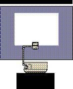

Jump To Chapter: [1 | 2 | 3 | 4 | 5 | 6 | 7 | 8 | 9 | 10 | 11 | 12 | 13 | 14 | 15 | 16 | 17 | 18 | 19 | 20 | 21 | 22]

This page indexes Postscript source files for the transparency masters for the Joy of C textbook. There is one Postscript file for each of the 22 chapters in the text. You may see some or all of these in course lectures.
Each file is between 20-40 pages, depending on the length of the chapter.
Jump To Chapter: [1 |
2 |
3 |
4 |
5 |
6 |
7 |
8 |
9 |
10 |
11 |
12 |
13 |
14 |
15 |
16 |
17 |
18 |
19 |
20 |
21 |
22]